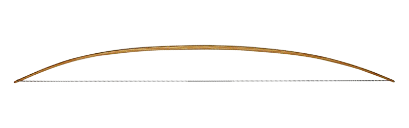

Self bow
Medieval self- or stave bows were made from ash, yew, hazel, elm, and holly wood. Stave bows varied in length from 5 feet (1.5 m) to 6.3 feet (1.9 m) and had a thick D-shaped cross-section. The back of the bow (the side facing the target) was flat, while the belly was rounded. The bow shaft tapered gradually toward both ends and was usually fitted with horn nocks. A yarn winding was often applied in the middle. The bowstring was made of flax or linen and coated with beeswax. Depending on the bow’s length, the maximum range was between 100 yards (91 m) and 400 yards (370 m). The draw weight also varied from 90 pounds (41 kg) to 140 pounds (64 kg).